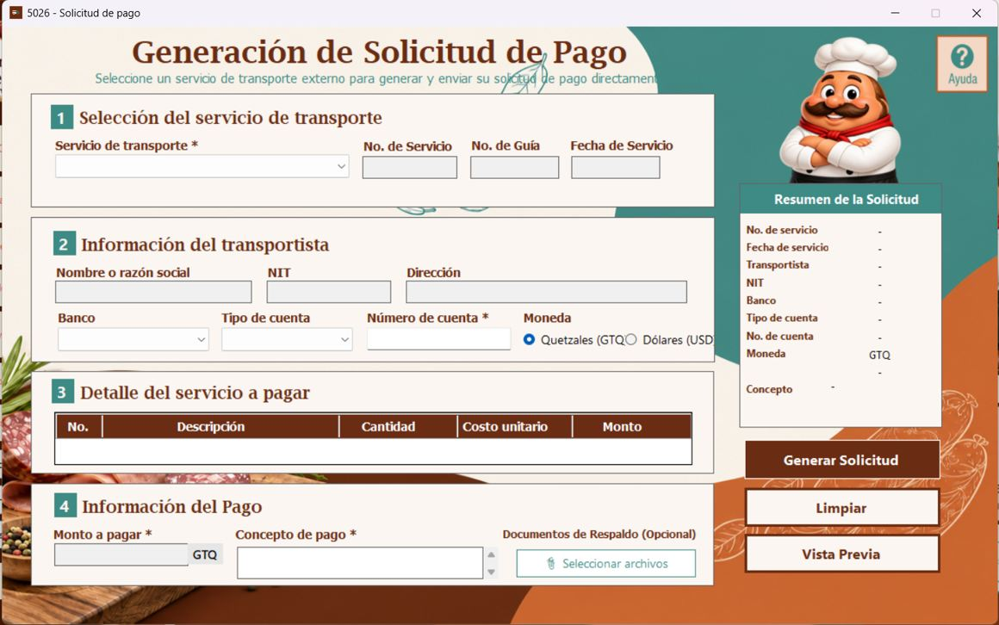
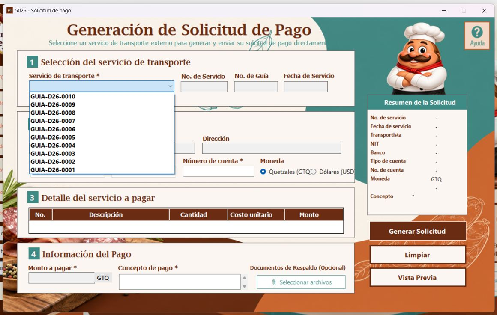
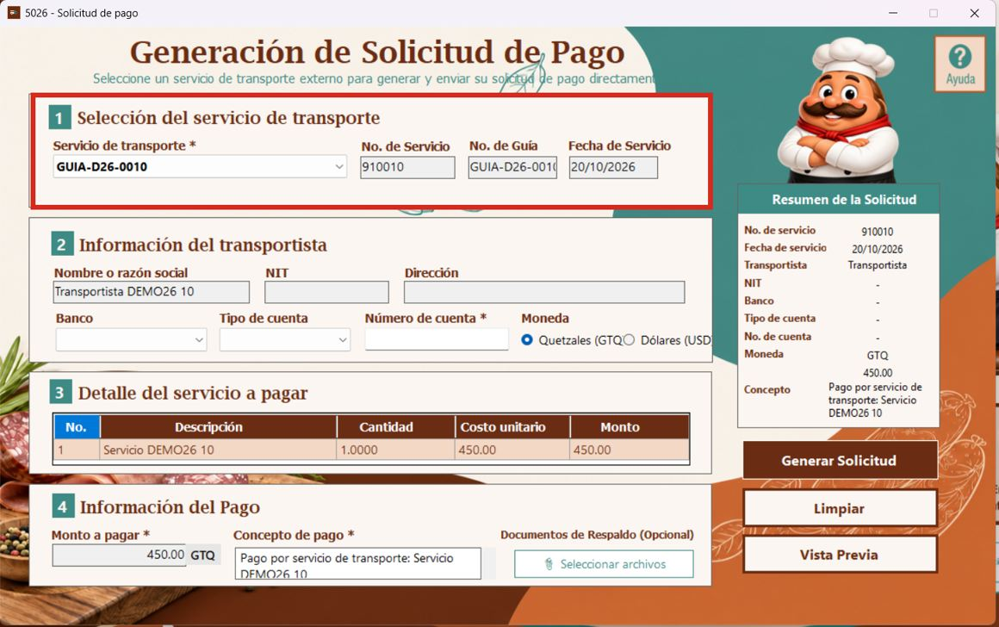
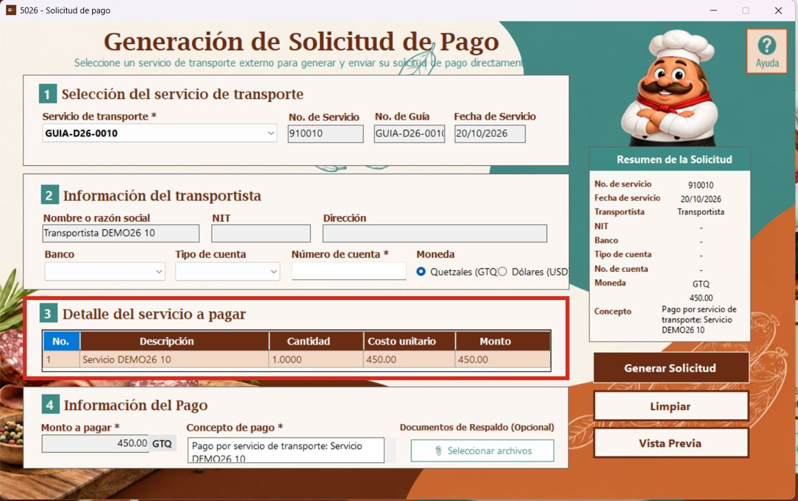
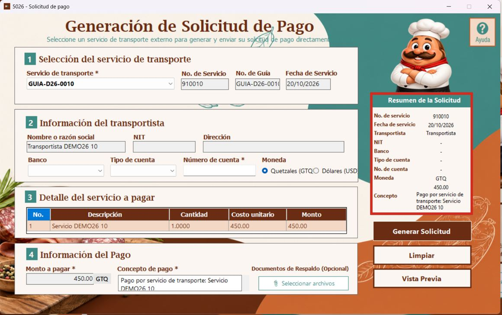
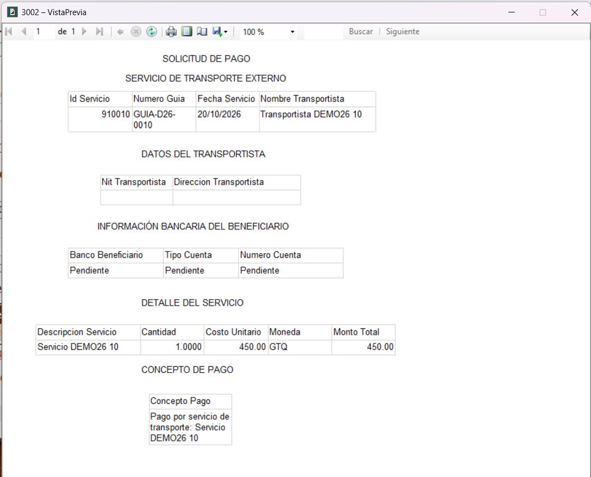
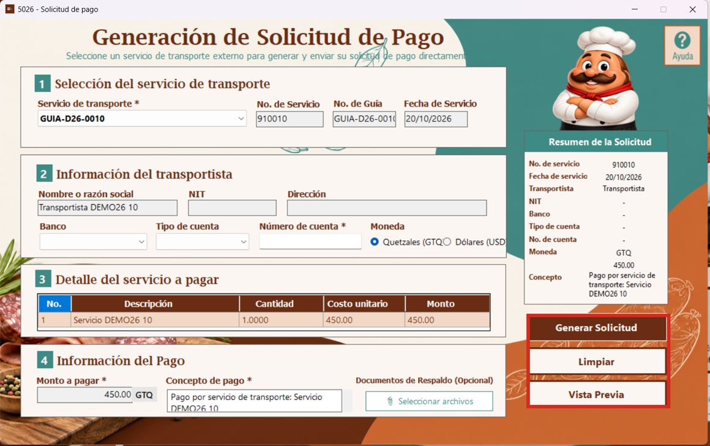

El formulario está organizado en cuatro secciones numeradas: 1. Selección del servicio de transporte, 2. Información del transportista, 3. Detalle del servicio a pagar y 4. Información del Pago. A la derecha aparece el resumen y los botones principales.

Los campos marcados con asterisco (*) requieren especial atención. Algunos datos se rellenan al seleccionar la guía.
En el campo Servicio de transporte *, abra la lista desplegable y elija la guía que corresponda al transporte que desea pagar.

Al seleccionar una guía, el formulario muestra el número de servicio, el número de guía y la fecha correspondiente.

Después de seleccionar el servicio, revise el nombre o razón social, el NIT y la dirección del transportista.
En esta misma sección se encuentran los campos Banco, Tipo de cuenta, Número de cuenta * y la selección de Moneda entre Quetzales (GTQ) y Dólares (USD).
La tabla muestra los datos económicos del servicio seleccionado. Revise las columnas No., Descripción, Cantidad, Costo unitario y Monto.

En el ejemplo se muestra una cantidad de 1.0000, un costo unitario de 450.00 y un monto de 450.00. Confirme que el detalle coincida con el servicio que se desea pagar.
En la sección 4 revise el campo Monto a pagar *, la moneda mostrada y el Concepto de pago *. El concepto debe describir claramente el servicio al que corresponde el pago.
También se visualiza el botón Seleccionar archivos en Documentos de Respaldo (Opcional). Si su versión permite adjuntar archivos, seleccione únicamente los documentos autorizados.
El panel derecho permite comprobar rápidamente los datos principales: número y fecha de servicio, transportista, NIT, banco, tipo de cuenta, número de cuenta, moneda, monto y concepto.

Cuando algún dato no está disponible, puede mostrarse un guion (-). Antes de generar un documento, revise los campos que todavía estén pendientes.
Después de seleccionar el servicio y revisar los datos, presione Vista Previa. El sistema abre la ventana del reporte de Solicitud de Pago, si los datos son válidos y el reporte está disponible.

En el reporte se presentan los datos del transporte, del beneficiario, el detalle del servicio y el concepto de pago. En la captura de ejemplo los datos bancarios figuran como Pendiente.

Este botón está destinado a iniciar la generación de la solicitud de pago. Su resultado exacto debe comprobarse en la versión instalada del sistema.
Restablece los campos del formulario para comenzar una nueva selección de servicio.
Abre el reporte para revisar los datos de la solicitud antes de continuar con el procedimiento correspondiente.
En la esquina superior derecha aparece el botón Ayuda, identificado con un signo de interrogación.
Su función es abrir este manual de usuario, siempre que el archivo de ayuda esté instalado y el evento del botón esté configurado.